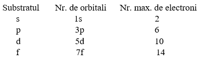
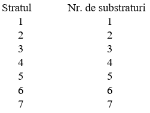

Straturile se diferențiază prin:
1)Numărul de electroni:
N=2n2
N= nr. max de electroni de pe stratul n
K=2*12= 2*1=2
L= 2*22=8
M=2*32=18
N=2*42=32
O=2*52=50
P=2*62= 72
Q=2*72=98
2)Distanța față de nucleu
3)Energia electronilor: Electronii de pe primul strat au cea mai mică energie, electronii de pe ultimul strat au cea mai mare energie.
4)Numărul de substraturi și numărul de orbitali
Orbitalul reprezintă probabilitatea cea mai mare(spațiul din jurul nucleului) unde vom găsi electronul.
PRINCIPIUL LUI PAULI: ȋntr-un orbital ȋncap maximum 2 electroni de spin opus.
Mișcarea de spin este mișcarea in jurul propriei axe.
Tipuri de orbitali: s, p, d, f.

Toți electronii unui substrat au aceeași energie.

Configurația electronică: 1s2 2s2 2p6 3s2 3p6 4s2 3d10 4p6 5s2 4d10 5p6
Regula lui Hund: ȋntr-un substrat, ȋntȃi se completează fiecare orbital cu cȃte un electron și după aceea se trece la completarea cu cel de-al doilea electron.
11Na 2s2 2s2 2p6 2s1